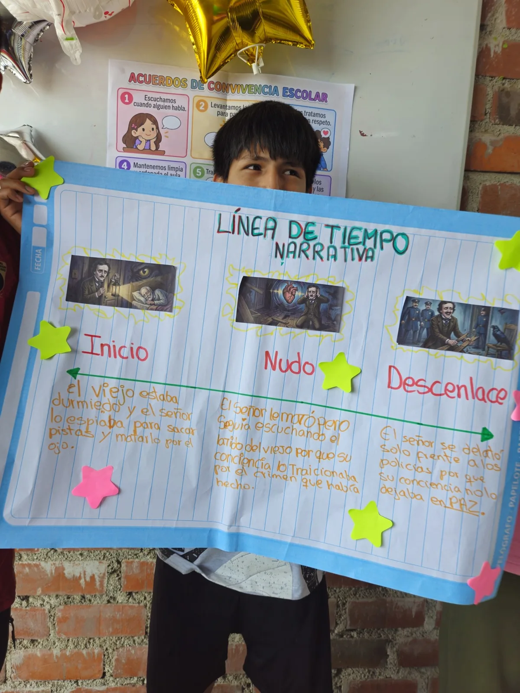

Proyectos educativos
Lectura, pensamiento crítico y habilidades para participar en la comunidad.
Educación · Voluntariado · Comunidad
Creamos oportunidades de aprendizaje y bienestar para niños y familias, junto a una comunidad de voluntarios que acompaña, escucha y comparte.

Nuestra razón de ser
Desde el 22 de diciembre de 2017, Sonríe Corazón conecta la iniciativa de jóvenes voluntarios con experiencias educativas y acciones solidarias. Hoy, la lectura y el acompañamiento socioemocional son parte central de nuestro trabajo con la comunidad.
Conoce nuestra historia Edición
EdiciónNuestro proyecto de lectura
Leer, imaginar, conversar y crear.
Acompañamos a estudiantes de 6 a 14 años en el desarrollo de la comprensión lectora y el gusto por los libros. Cada sesión combina lectura compartida, juego, reflexión y una creación propia.
Bibliosonrisas
Nuestra biblioteca comunitaria en Collique, Comas, acompaña los talleres de Soñando Libros y acerca libros a niños y familias. Un espacio para descubrir lecturas, compartirlas y volver por una nueva historia.
Conoce BibliosonrisasAsí vivimos la lectura

«Cómo atrapar una estrella» y «El corazón delator» nos invitan a vivir la lectura de maneras distintas.
Mira el video de la sesión
Dibujos, dramatizaciones y trabajo en equipo para conversar sobre lo que leemos.
Explora la galeríaNuestra acción
Lectura, pensamiento crítico y habilidades para participar en la comunidad.
Espacios para reconocer emociones, expresarse y fortalecer vínculos.
Personas e instituciones que suman capacidades, tiempo y recursos.
Juntando corazones para crear alegría
Súmate a nuestra comunidad y conversemos sobre cómo aportar.